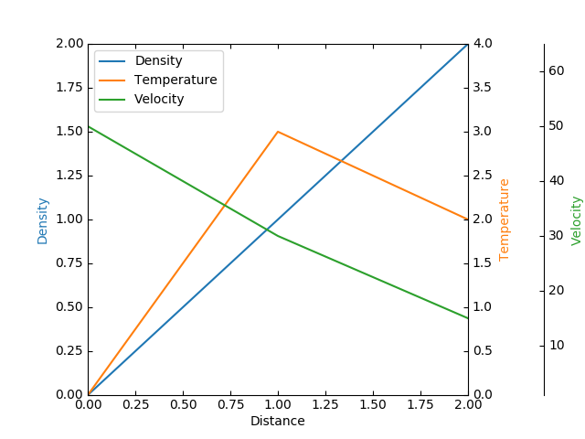

Version 3.1.0
Note
Click here to download the full example code
Create a parasite axes. Such axes would share the x scale with a host axes, but show a different scale in y direction.
This approach uses mpl_toolkits.axes_grid1.parasite_axes.HostAxes and
mpl_toolkits.axes_grid1.parasite_axes.ParasiteAxes.
An alternative approach using standard Matplotlib subplots is shown in the Multiple Yaxis With Spines example.
An alternative approach using the Matplotlib axes_grid1 Toolkit and Matplotlib axisartist Toolkit is found in the Demo Parasite Axes2 example.
from mpl_toolkits.axisartist.parasite_axes import HostAxes, ParasiteAxes
import matplotlib.pyplot as plt
fig = plt.figure()
host = HostAxes(fig, [0.15, 0.1, 0.65, 0.8])
par1 = ParasiteAxes(host, sharex=host)
par2 = ParasiteAxes(host, sharex=host)
host.parasites.append(par1)
host.parasites.append(par2)
host.set_ylabel("Density")
host.set_xlabel("Distance")
host.axis["right"].set_visible(False)
par1.axis["right"].set_visible(True)
par1.set_ylabel("Temperature")
par1.axis["right"].major_ticklabels.set_visible(True)
par1.axis["right"].label.set_visible(True)
par2.set_ylabel("Velocity")
offset = (60, 0)
new_axisline = par2.get_grid_helper().new_fixed_axis
par2.axis["right2"] = new_axisline(loc="right", axes=par2, offset=offset)
fig.add_axes(host)
host.set_xlim(0, 2)
host.set_ylim(0, 2)
host.set_xlabel("Distance")
host.set_ylabel("Density")
par1.set_ylabel("Temperature")
p1, = host.plot([0, 1, 2], [0, 1, 2], label="Density")
p2, = par1.plot([0, 1, 2], [0, 3, 2], label="Temperature")
p3, = par2.plot([0, 1, 2], [50, 30, 15], label="Velocity")
par1.set_ylim(0, 4)
par2.set_ylim(1, 65)
host.legend()
host.axis["left"].label.set_color(p1.get_color())
par1.axis["right"].label.set_color(p2.get_color())
par2.axis["right2"].label.set_color(p3.get_color())
plt.show()
Keywords: matplotlib code example, codex, python plot, pyplot Gallery generated by Sphinx-Gallery